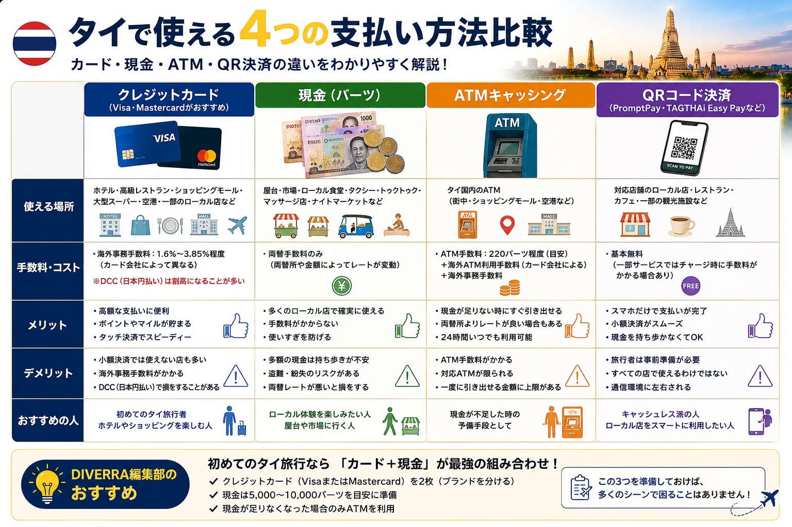
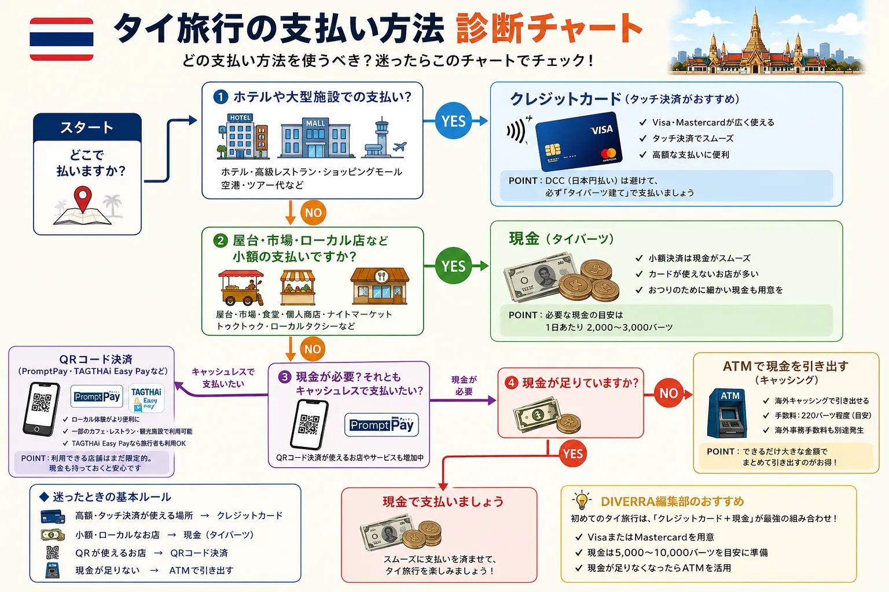
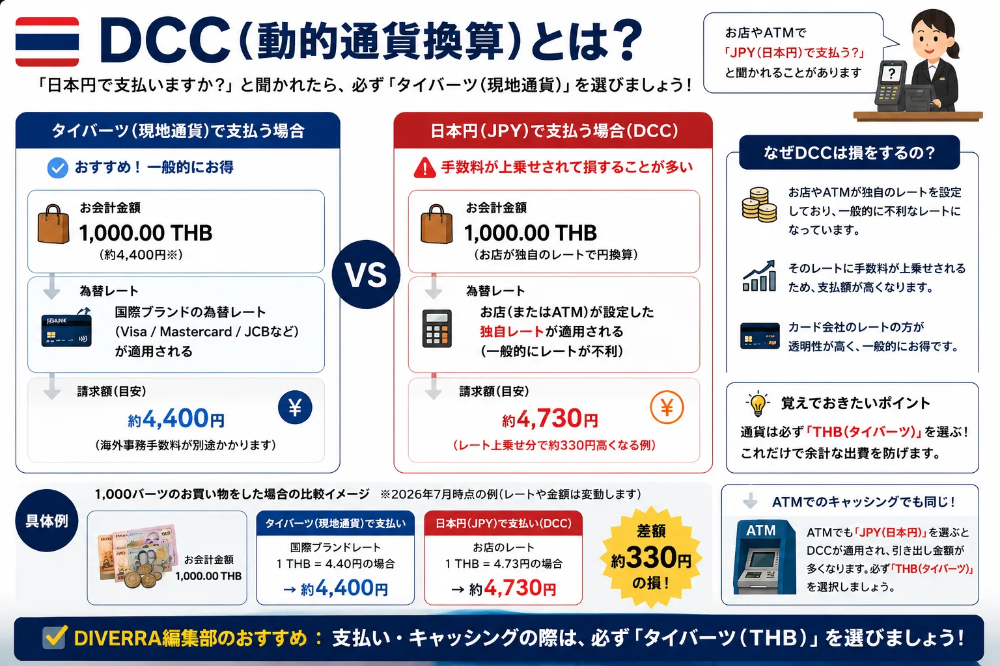
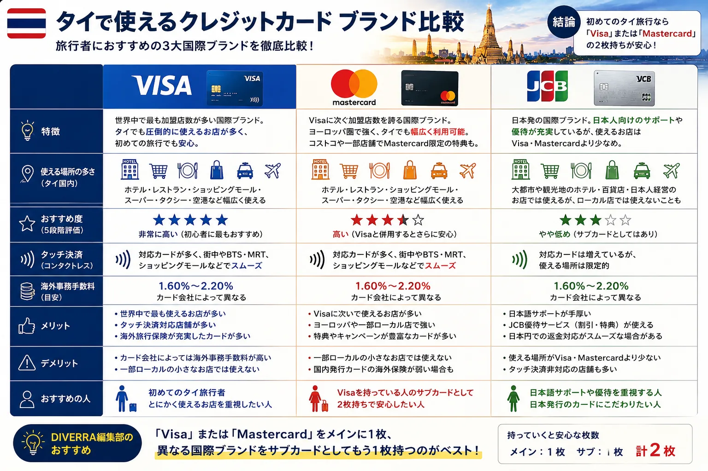
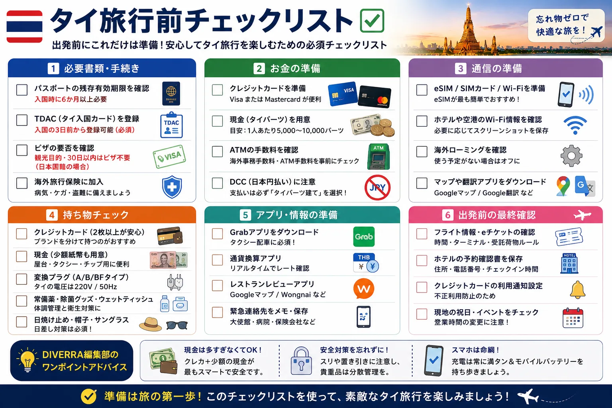

タイ旅行の準備を進めていると、「クレジットカードだけで旅行できる？」「現金はどれくらい必要？」「屋台でもカードは使える？」と気になる方も多いのではないでしょうか。
タイは近年キャッシュレス化が進み、大型商業施設やホテルではクレジットカードが利用できる店舗が増えています。一方で、現金しか利用できない場所もあるため、旅行中は現金とカードを上手に使い分けることが大切です。
結論｜タイ旅行は「クレジットカード＋現金」の組み合わせがおすすめ
タイ旅行では、クレジットカードだけに頼るのではなく、現金も用意しておくのがおすすめです。まず全体像をつかみたい方は、下の比較図を見るとイメージしやすくなります。

| 支払いシーン | おすすめ |
|---|---|
| ホテル | クレジットカード |
| ショッピングモール | クレジットカード |
| レストラン | クレジットカード |
| 屋台 | 現金 |
| ナイトマーケット | 現金 |
| ローカル食堂 | 現金 |
| BTS・MRT | 現金または対応決済 |
この組み合わせなら、多くの場面で困ることはありません。
💡DIVERRA編集部のおすすめ
初めてタイ旅行へ行くなら、DIVERRA編集部では次の組み合わせをおすすめします。
- VisaまたはMastercardを2枚用意する
- 2枚はできれば別ブランドに分ける
- 現金は5,000〜10,000バーツを目安に準備する
- 現金が不足したときだけATMを利用する
ホテルや大型商業施設ではカードが便利ですが、屋台・市場・ローカル食堂では現金の方がスムーズな場面が残っています。カードは磁気不良、利用制限、紛失などで使えなくなる可能性もあるため、1枚だけに頼ると不安が残ります。
VisaまたはMastercardを2枚持っておくと、片方が使えない場合の予備になります。現金は使いすぎ防止にもなり、チップや少額決済にも対応しやすくなります。現金の目安は、タイ旅行で現金はいくら必要？もあわせて確認してください。
クレジットカードが使える場所
タイでは、ホテル、大型ショッピングモール、デパート、チェーンレストラン、ブランドショップ、観光施設などでカード決済が利用できます。旅行中の大きな支払いはカードを利用すると、現金を多く持ち歩かずに済みます。
ホテルでは宿泊費の支払いだけでなく、デポジットの提示を求められることもあるため、クレジットカードを1枚は用意しておくと安心です。
カードが使える場所でも、端末トラブルや通信状況によって決済できないことがあります。特に夜遅い時間や移動中は、少額の現金を手元に残しておくと安心です。
現金が必要な場所
屋台、ナイトマーケット、個人経営の飲食店、ローカルマーケット、小規模なお土産店、一部の交通機関では現金が必要になることがあります。
特に屋台グルメを楽しみたい方は、少額紙幣を多めに持っておくと便利です。1,000バーツ札だけではお釣りがないと言われることもあるため、20・50・100バーツ札を分けて持っておきましょう。
支払い方法に迷いやすい場面は、下の診断チャートでざっくり判断できます。

現金はいくら必要？
現金をどれくらい用意すべきか迷う場合は、タイ旅行で現金はいくら必要？で日数別の目安を確認できます。
タイではQR決済も普及している
タイではQR決済も急速に普及しています。現地ではPromptPayが広く利用されており、旅行者向けにはTAGTHAi Easy Payのようなサービスも提供されています。
ただし、日本人旅行者が短期滞在で利用する場合は、現金とクレジットカードを組み合わせる方がシンプルで使いやすいでしょう。短期旅行では、登録やチャージ方法を現地で調べるよりも、事前にカードと現金を準備しておく方が迷いにくくなります。
✅ここまでのポイント
ここまでを整理すると、タイ旅行では「カードだけ」でも「現金だけ」でもなく、場所によって使い分けるのが現実的です。
- カードだけでは不十分
- 屋台・市場は現金が便利
- クレジットカードはVisa・Mastercardがおすすめ
- DCCでは日本円ではなく現地通貨（タイバーツ）を選ぶ
次に、クレジットカードを使うメリットと、旅行前に確認しておきたい注意点を見ていきましょう。
クレジットカードを利用するメリット
現金を持ち歩く量を減らせる
カードを使えば、旅行中に多額の現金を持ち歩く必要が少なくなります。盗難や紛失のリスクを減らしやすく、ホテルやショッピングモールでの支払いもスムーズです。
高額な支払いも安心
ホテル代や大きな買い物は、現金よりカードの方が管理しやすい場面があります。支払い履歴が残るため、旅行後の支出確認もしやすくなります。
利用明細を確認できる
カード会社のアプリや通知機能を使えば、利用直後に金額を確認できます。不正利用の早期発見にもつながるため、出発前に通知設定をONにしておきましょう。
カード払いは便利ですが、「使った感覚」が薄くなりやすい支払い方法でもあります。旅行中は1日の予算を決め、夜に利用明細を確認するだけでも使いすぎを防ぎやすくなります。
クレジットカード利用時の注意点
海外利用手数料を確認する
カード会社によって海外事務手数料が異なります。旅行前に、カード会社の公式サイトや会員ページで海外利用時の手数料を確認しておくと安心です。
利用できるブランドを確認する
Visa・Mastercardは比較的利用しやすく、多くの店舗で対応しています。JCBやAmerican Expressなどは利用できる場所が限られる場合があるため、メインカードはVisaまたはMastercardを選ぶと安心です。
利用通知をONにしておく
不正利用対策として、カード会社の利用通知サービスを設定しておくことをおすすめします。現地でカード会社のアプリや地図を使う場面も多いため、通信手段も忘れずに準備しましょう。通信準備は海外旅行eSIMの選び方で確認できます。
DCCでは現地通貨を選ぶ
海外のカード決済端末では、支払い時に「日本円で払うか」「現地通貨で払うか」を選ぶ画面が表示されることがあります。これはDCC（Dynamic Currency Conversion）と呼ばれる仕組みです。

タイ旅行では、DCCの画面が出たら、原則として現地通貨であるタイバーツ（THB）を選びましょう。日本円を選ぶと、店舗側や決済サービス側が設定した換算レートが使われ、結果的に割高になる場合があります。
決済端末で迷ったときは「THB」「Thai Baht」「Local Currency」と表示されている方を選ぶ、と覚えておくと実践しやすいです。
ブランド比較表
タイ旅行で使うカードブランドは、まずVisaまたはMastercardを軸に考えると迷いにくくなります。JCBは日本語サポートや優待を重視したい方には選択肢になりますが、メインカードとしては使える場所の多さも確認しておきましょう。
| ブランド | タイ旅行での使いやすさ | 初心者向け | 向いている人 |
|---|---|---|---|
| Visa | 対応店舗が多く、メインカード向き | ◎ | 初めてタイへ行く人、使える場所の多さを重視する人 |
| Mastercard | Visaとあわせて持つサブカードにも向く | ◎ | 予備カードを用意したい人、ブランドを分けたい人 |
| JCB | 使える場所が限られる場合がある | ○ | 日本語サポートや優待を重視する人 |

Visa
Visaは世界的に加盟店が多く、タイでもホテル、ショッピングモール、レストランなどで使いやすいブランドです。
Mastercard
Mastercardもタイ旅行で使いやすい国際ブランドです。VisaとMastercardを1枚ずつ持っておくと、片方が使えない場面の備えになります。
JCB
JCBは日本発の国際ブランドで、日本人向けのサポートや優待が魅力です。ただし、店舗によってはVisa・Mastercardより対応範囲が限られることがあります。
支払い方法の比較表
| 支払い方法 | 使いやすい場所 | 初心者向けか | 手数料 | 向いている人 |
|---|---|---|---|---|
| クレジットカード | ホテル、大型商業施設、レストラン | ◎ | 海外事務手数料がかかる場合あり | 現金を多く持ち歩きたくない人 |
| 現金 | 屋台、市場、ローカル食堂、チップ | ◎ | 両替時のレート差に注意 | 初めてのタイ旅行、少額決済が多い人 |
| ATM引き出し | 空港、駅、ショッピングモール周辺 | ○ | ATM利用手数料やカード会社の条件を確認 | 現金が不足したときだけ使いたい人 |
| QR決済 | 一部店舗、旅行者向けサービス対応店 | △ | サービスごとに条件確認が必要 | 現地アプリに慣れている人 |
ATMを使う場合は、カード会社の条件やATM利用手数料を事前に確認してください。現金不足時の選択肢としては便利ですが、補助的に使う方が分かりやすいでしょう。ATMについてはタイ旅行のATM手数料を無料にする方法でも解説しています。
タイ旅行でおすすめの支払い方法
旅行中は、ホテル・ショッピングはクレジットカード、屋台・市場は現金、現金が不足したときだけATMを利用する使い分けがおすすめです。
両替は、出発前にすべて済ませる必要はありません。日本で少額、空港で必要最低限、市内で追加という考え方もできます。詳しくはタイ旅行の両替は日本と現地どっちがお得？を参考にしてください。
スワンナプーム空港到着後にエアポートレールリンク（ARL）を使う予定がある方は、空港で交通費程度の現金を用意しておくと動きやすくなります。空港での両替場所はタイでおすすめの両替所5選の空港両替セクションでも触れています。
支払い方法診断チャート
現地では例外もありますが、迷ったら次の流れで判断するとスムーズです。
ホテル・大型施設？ ↓ YES → カード ↓ NO ↓ 屋台・市場・ローカル食堂？ ↓ YES → 現金 ↓ NO ↓ カードが使えるか確認 ↓ 使える → カード 使えない → 現金 ↓ 現金が不足したらATM
🧳旅行前チェックリスト
- パスポートの残存有効期間を確認した
- TDACの登録が必要なことを確認した
- VisaまたはMastercardを用意した
- できればカードを2枚用意した
- カードの海外利用設定を確認した
- 暗証番号を確認した
- 利用通知をONにした
- カード会社の海外事務手数料を確認した
- 現金5,000〜10,000バーツを目安に準備した
- ホテルのデポジット有無を確認した
チェックリストは「全部できていないと旅行できない」という意味ではありません。出発前に一つずつ確認しておくことで、現地で慌てる場面を減らすためのものです。
よくある質問
タイ旅行はクレジットカードだけでも大丈夫ですか？
大型施設では利用できますが、屋台や市場など現金しか使えない場所もあるため、現金も用意しておくのがおすすめです。
タイでVisaとMastercardは使えますか？
多くのホテルや商業施設で利用できます。対応ブランドは店舗によって異なるため、決済前に確認しましょう。
現金はいくら持ち歩けばいいですか？
その日に使う予定の金額を中心に持ち歩き、多額の現金はホテルのセーフティボックスなどで保管すると安心です。旅行全体の目安はタイ旅行で現金はいくら必要？で詳しく解説しています。

まとめ
タイ旅行では、キャッシュレス化が進んでいる一方で、現金が必要になる場面も多くあります。ホテルや大型施設ではクレジットカード、屋台や市場では現金、現金が不足したときだけATMという使い分けが、旅行中もっとも快適で安心できる方法です。
旅行前に支払い方法をイメージしておくことで、現地で慌てる場面はかなり減らせます。VisaまたはMastercardを中心にカードを用意し、少額紙幣を含めた現金も準備して、タイ旅行を安心して楽しみましょう。
🎯迷ったらこれだけ覚えてください
- VisaまたはMastercardを持つ
- 屋台・市場・ローカル食堂では現金を使う
- DCCでは日本円ではなくタイバーツ建てを選ぶ
- 現金が不足したときだけATMを使う
支払い方法で迷ったら、「カードが使える大きな場所はカード、ローカルな少額支払いは現金」と覚えておけば大きく外しません。